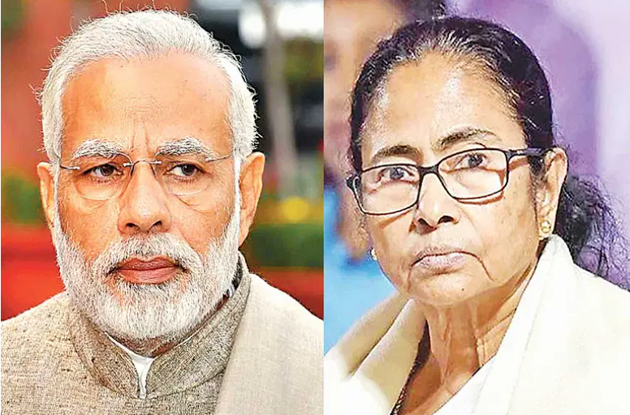

পশ্চিমবঙ্গে বিজেপি পেতে পারে ২৩ আসন, তৃণমূল ১৩ভারতের লোকসভা নির্বাচনের আজ শনিবার ছিল শেষ দফার ভোট গ্রহণ। এই ভোট গ্রহণ শেষে শুরু হয়েছে বুথফেরত জরিপ। ‘এবিপি আনন্দ ও সি-ভোটার’ বুথফেরত জরিপ বলছে, পশ্চিমবঙ্গে এবার সবচেয়ে বেশি আসন পাবে নরেন্দ্র মোদির দল বিজেপি। পশ্চিমবঙ্গে লোকসভার মোট ৪২টি আসনের মধ্যে বিজেপি ২৩ থেকে ২৭টি আসন পেতে যাচ্ছে বলে জানায় ‘এবিপি আনন্দ ও সি-ভোটার’। তাদের জরিপ বলছে, পশ্চিমবঙ্গের মুখ্যমন্ত্রী মমতা বন্দ্যোপাধ্যায়ের দল তৃণমূল কংগ্রসে ১৩ থেকে ১৭টি আসন পেতে পারে। আর বাম-কংগ্রেস জোট জিততে পারে ১ থেকে ৩টি আসনে। অন্যদিকে ‘টিভি-৯’ বুথফেরত জরিপে ইঙ্গিত দিয়েছে, বিজেপি জিততে পারে ২০টি আসনে আর তৃণমূল জিততে পারে ২১টি আসনে। তারা অবশ্য কংগ্রেসের ভাগে দিয়েছে ১টি আসন। বাম দলকে শূন্যের কোঠায় রেখেছে। যদিও এই জরিপকে গুরুত্ব দেয়নি বিজেপি এবং তৃণমূল কংগ্রেস। তৃণমূল বলেছে, ওই সমীক্ষা সঠিক হবে না। তৃণমূল বহু আসনে জিতবে। আর বিজেপি বলেছে, তারা এখনো মনে করছে কমপক্ষে তারা ৩০টি আসনে জিততে চলেছে। সবশেষ ২০১৯ সালের লোকসভা নির্বাচনে এই ৪২টি আসনের মধ্যে তৃণমূল পেয়েছিল ২২টি আসন। বিজেপি পেয়েছিল ১৮টি আসন এবং কংগ্রেস পেয়েছিল ২টি আসন। বাম দলের থলিতে কোনো আসন জোটেনি। শেষ পর্বে আজ পশ্চিমবঙ্গের ৯টি আসনে ভোট গ্রহণ করা হয়। আজ অন্যান্য দফার তুলনায় কিছুটা বেশি হামলা–সংঘর্ষের ঘটনা ঘটেছে। তৃণমূল কমবেশি প্রতিটি কেন্দ্রে সন্ত্রাস চালিয়েছে বলে অভিযোগ উঠেছে। সর্বশেষ ২০১৯ সালে এই ৯টি আসনেই জয় পেয়েছিল তৃণমূল। তাই আসনগুলো ধরে রাখতে মরিয়া দলটি। |